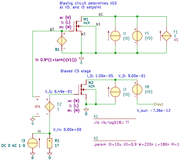

CSstageNMOS_SPICE
.lib lib/log018.l TT
.param ID=10u VD=0.9 W=220n L=180n M=1
B1 g1 0 V=0.9*(1+tanh(I(V1)))
E2 1 in g1 0 1
F1 0 d1 V1 1
I1 0 d1 {ID}
I2 0 d2 {ID}
I3 0 in DC 0 AC 1 0
M1 d1 g1 0 0 nch m={M} w={W} l={L}
M2 d2 1 0 0 nch m={M} w={W} l={L}
R1 in 0 1T noisy=1
V1 d1 0 {VD}
V8 d2 out {VD}
.end
Go to CSstageNMOS_SPICE_index
SLiCAP: Symbolic Linear Circuit Analysis Program, Version 4.0.7 © 2009-2025 SLiCAP development team
For documentation, examples, support, updates and courses please visit: analog-electronics.tudelft.nl
Last project update: 2025-11-17 12:28:36